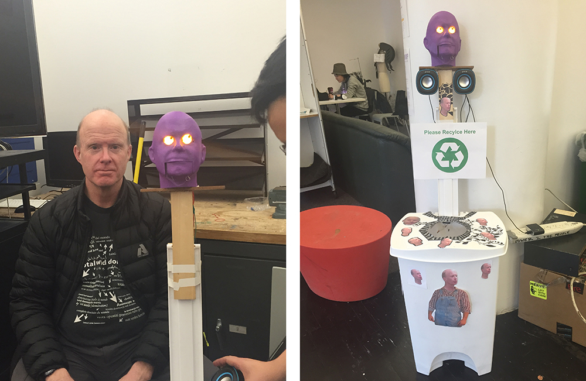
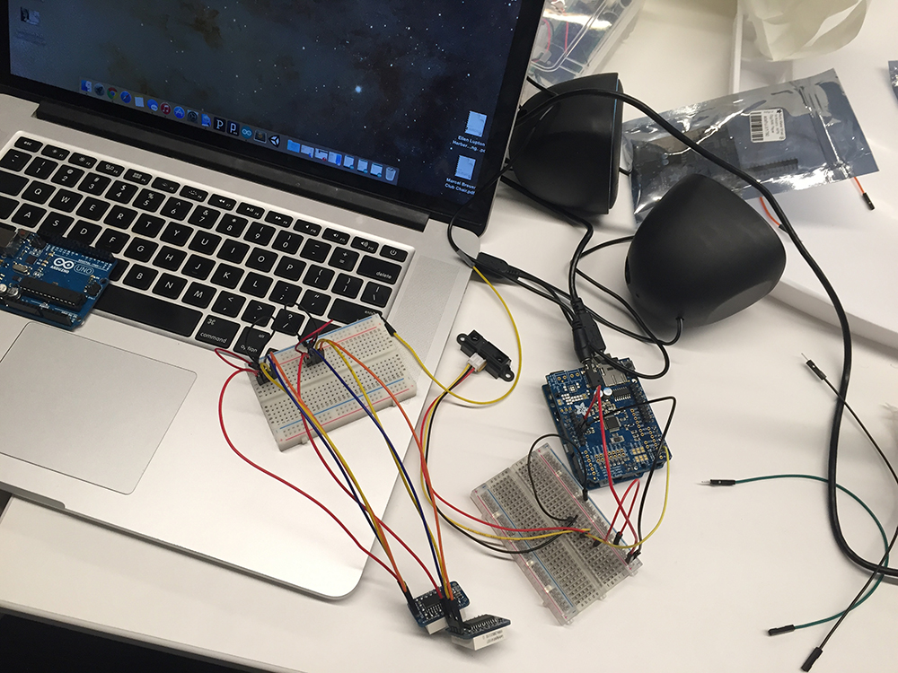
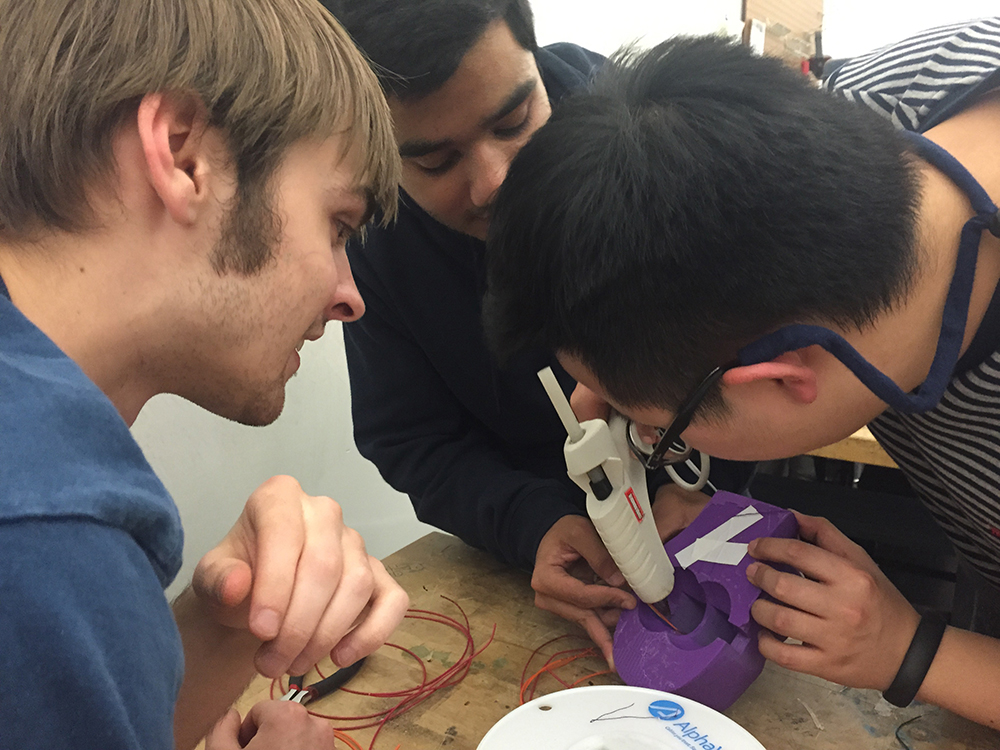

Recycling Comedy
2015
D12 (12th floor of 6 E 16 Street, New York) is the home to Design and Technology students at Parsons. Students go up to D12 hoping to work in a lively, inspirational and clean environment. Recycling comedy is our project to encourage recycling on D12 with a playful and interactive recycling. It not only engages the students to recycle more often, but also makes some laughters with the comical dialogue that’s emitted from the robot head. The 3D-printed head is 3D scanned from Sven, the founder of our program. An IR motion sensor is installed inside of the bin to detect any recycling materials. Once the IR sensor is triggered, Sven's head will open its mouse, controlled by a servo, and Sven’s dialogues will be played
Tools used include 3D scanning and printing, Arduino Uno, Adafruit MP3 music shield, 8×8 LED matrices, servo motor, an IR motion sensor and speakers.
Watch they funny video of people interacting with the recycling bin on D12. (Video edited by Yi.)
This is a group project with Yi Tang, Gentry Demchak and Shubank Sahay.
 